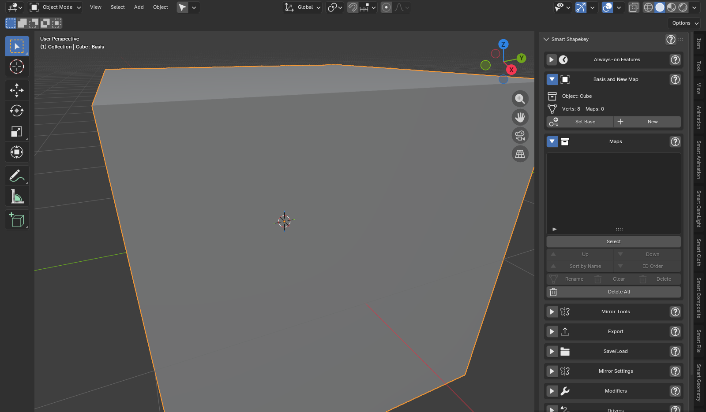
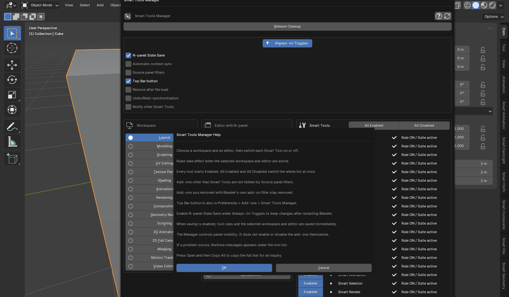
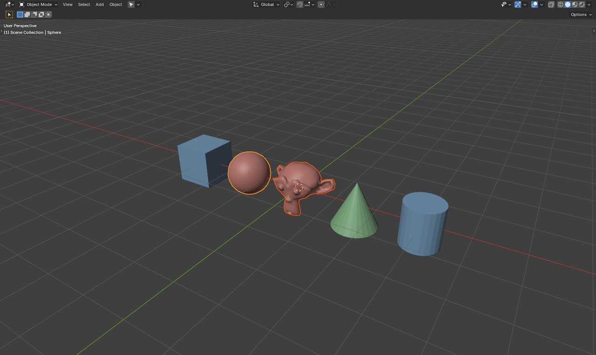
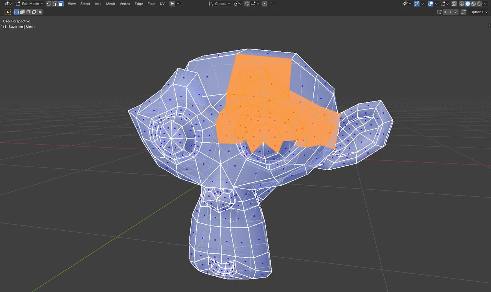

SmartTools
SmartTools Overall Specification
Version 1.0.0 / November 19, 2026 / For Blender 5.1.2
This guide covers everything that applies to all 23 SmartTools add-ons. Start with installing the add-ons, choosing the interface language, using the N panel and the “?” help, and troubleshooting, then continue to the manual for each add-on you use.
1. About This Guide
- SmartTools is a set of 23 add-ons for Blender 5.1.2: 21 add-ons, the “Smart Tools Manager” that manages them as a whole, and the bundled “Keymap Manager”.
- Smart Tools Manager is a tool for managing SmartTools as a whole. It lets you decide, on a single screen, which editors show each add-on’s panels. The other add-ons work fine without it (Chapter 6).
- Keymap Manager is a tool bundled with SmartTools. It lets you look up Blender’s keyboard shortcuts and find and fix conflicts.
- Do not install the same add-on twice (Chapter 3).
- How to use each add-on is explained in its own manual (Chapter 10). All manuals share the same chapter structure.
2. What’s Included
SmartTools consists of the following 23 ZIP files, available from the download list. You only need to install the ones you use.
Overall Management
A tool for managing SmartTools as a whole. It lets you decide, on a single screen, which editors show the other add-ons’ panels (Chapter 6).
| Name | What it does | ZIP | Size | Manual |
|---|---|---|---|---|
| Smart Tools Manager | A tool for managing all of SmartTools. In one screen, you decide which Smart Tools panels appear for each combination of Workspace and Editor. | SmartToolsManager_1.0.0.zip | 82 KB | Manual |
Modeling
| Name | What it does | ZIP | Size | Manual |
|---|---|---|---|---|
| SmartGeometry Suite | A shape generation tool that creates terrain, scatter points, debris, fragments, branching curves, and basic shapes you can edit with numbers later, all with a click of a button. | SmartGeometrySuite_1.0.0.zip | 676 KB | Manual |
| SmartModeling Suite | An add-on that gathers modeling helper tools, including vertex editing, alignment, deletion, retopology, hard surface modeling, and generation, into a single Sidebar. | SmartModelingSuite_1.0.0.zip | 3,049 KB | Manual |
| SmartModifier Suite | A tool for adding, reordering, toggling the display of, and editing intermediate stages of modifiers, all from the 3D Viewport Sidebar. | SmartModifierSuite_1.0.0.zip | 1,569 KB | Manual |
| SmartSculpt Suite | An add-on that gathers sculpting tools (for shaping forms like kneading clay) in the "Smart Sculpt" tab of the Sidebar, so you can refine shapes with brushes and filters even while staying in Mesh Edit Mode. | SmartSculptSuite_1.0.0.zip | 10,772 KB | Manual |
| SmartTransform Suite | An add-on that bundles tools for setting an object's location, rotation, and size exactly with numbers, and for making click and drag operations easier to use. | SmartTransformSuite_1.0.0.zip | 649 KB | Manual |
UVs, Materials & Painting
| Name | What it does | ZIP | Size | Manual |
|---|---|---|---|---|
| SmartNode Suite | A node tool that rearranges cluttered nodes into a readable layout with one button, and also merges and wires selected nodes, selects and frames nodes by following their connections, all from Sidebar buttons. | SmartNodeSuite_1.0.0.zip | 398 KB | Manual |
| SmartPaint Suite | A paint add-on that lets you paint and save layered images, such as PSD files, layer by layer inside Blender. | SmartPaintSuite_1.0.0.zip | 954 KB | Manual |
| SmartShader Suite | An add-on that handles material creation, toon conversion, texture import, cleanup, and checking, all from a single tab in the Sidebar. A material is the set of settings that defines how an object looks. | SmartShaderSuite_1.0.0.zip | 11,425 KB | Manual |
| SmartUV Suite | An add-on that puts everything into a single "Smart UV" tab in the Sidebar: "Auto Seam", which decides seam positions automatically, plus unwrapping, symbol-button alignment, auto packing with 18 presets, and baking. | SmartUVSuite_1.0.0.zip | 4,162 KB | Manual |
Rigging & Animation
| Name | What it does | ZIP | Size | Manual |
|---|---|---|---|---|
| SmartAnimation Suite | An add-on that gathers tools for easier keyframe work into a single Sidebar tab. | SmartAnimationSuite_1.0.0.zip | 1,080 KB | Manual |
| SmartCloth Suite | An add-on that handles cloth (fabric simulation) preparation, lightweight display, inspection, and safe baking for clothing, plus rigid bodies (Quick Rigid) and bone jiggle (Jiggle Physics), all in a single Sidebar tab. | SmartClothSuite_1.0.0.zip | 265 KB | Manual |
| SmartRig Suite | A companion add-on that lines up the whole Auto-Rig Pro rigging process in one panel, in order, from preparation to baking secondary motion and checking the motion. | SmartRigSuite_1.0.0.zip | 710 KB | Manual |
| SmartSelector Suite | An add-on that builds your own button screens (selectors) in a browser window, so you can select Blender bones and move shape keys with a single click. It also includes layers that stack motion without breaking the base animation, and selection sets that remember selected objects by name. | SmartSelectorSuite_1.0.0.zip | 497 KB | Manual |
| SmartShapekey Suite | An add-on that puts tools for creating, organizing, and animating Shape Keys, plus tools for baking facial captures, into a single Sidebar panel. | SmartShapekeySuite_1.0.0.zip | 4,148 KB | Manual |
Cameras, Rendering & Compositing
| Name | What it does | ZIP | Size | Manual |
|---|---|---|---|---|
| SmartCamLight Suite | An add-on that brings camera and light management together in one Sidebar panel. | SmartCamLightSuite_1.0.0.zip | 116 KB | Manual |
| SmartComposite Suite | An add-on that adds node groups such as Glow and Bokeh to the Compositor (the node screen where you finish rendered images) with a single button. | SmartCompositeSuite_1.0.0.zip | 2,607 KB | Manual |
| SmartRender Suite | An add-on that handles render preparation, output path checks, and batch rendering in a single panel. | SmartRenderSuite_1.0.0.zip | 757 KB | Manual |
Interface & Data
| Name | What it does | ZIP | Size | Manual |
|---|---|---|---|---|
| SmartFile Suite | A tool that brings importing files, checking links, exporting, review, and history and restore together in a single Sidebar panel. | SmartFileSuite_1.0.0.zip | 4,766 KB | Manual |
| SmartID Suite | An add-on that manages the IDs and channels you use in production (UV maps, attributes, groups, and more) in one list, so you can assign them to objects in bulk and inspect them. | SmartIDSuite_1.0.0.zip | 123 KB | Manual |
| SmartOverlay Suite | An add-on that overlays easy-to-read colors for vertices, edges, and faces, display of hidden back sides, topology checks, the range of proportional editing, measurements, and more on the 3D Viewport. | SmartOverlaySuite_1.0.0.zip | 645 KB | Manual |
| SmartWorkspace Suite | A workspace tool that puts the Quick Launcher, which opens your frequently used Sidebar (N panel) tabs with a single popup button, together with tab renaming and reordering, lighter viewport display, and saved screen layouts in one tab. | SmartWorkspaceSuite_1.0.0.zip | 834 KB | Manual |
Bundled Tool
A tool bundled with SmartTools.
| Name | What it does | ZIP | Size | Manual |
|---|---|---|---|---|
| Keymap Manager | A tool included with SmartTools. Look up shortcuts from a keyboard-shaped screen, then find and fix overlaps (conflicts). | KeymapManager_1.0.0.zip | 50 KB | Manual |
3. Installing the Add-ons
Install each add-on as a ZIP file. Do not extract (unzip) the ZIP. No internet connection is required.
- Start Blender and open Edit → Preferences from the menu at the top.
- Select Get Extensions in the list on the left.
- Open the ∨ (down arrow) menu at the top right and choose Install from Disk....
- In the file browser, select one of the SmartTools ZIP files you downloaded from the download list and click “Install from Disk”.
- Repeat steps 3–4 for each ZIP you want to install.
- Open Add-ons in the list on the left and check that the add-ons you installed are ticked (enabled).
4. Interface Language
Blender and the SmartTools add-ons display English by default. Every SmartTools add-on also includes a Japanese translation, which appears only when Blender’s interface language is set to Japanese.
To switch to Japanese
- Open Edit → Preferences.
- Select Interface in the list on the left.
- In the Language field, choose Japanese - 日本語.
- Under Translate, tick Tooltips and Interface. Turning on Reports is also recommended.
- Close the Preferences window. The setting is saved automatically.
To switch back to English, choose English (US) in the Language field.
5. Using the N Panel and the “?” Help
Most add-on controls are in the sidebar (N panel) on the right side of an editor. Hover the mouse over the editor and press N to show or hide it. Click a vertical tab on the right edge (Smart Modeling, Smart UV, …) to switch to that add-on’s panel.

- Each panel is divided into sections. Click ▶ to the left of a header to expand it and ▼ to collapse it.
- Click the ? to the right of a header to see an explanation of that feature. If you are unsure how to use something, click ? first.
- Hover the mouse over a button for a moment to see a short description (tooltip). For items without a description, the tooltip shows only the item name.
- Some add-ons show panels not only in the 3D Viewport but also in the sidebars of the UV Editor, Shader Editor, Dope Sheet and other editors. Chapter 4, “Where to Find It”, of each manual lists where the panels appear.
- The Smart Tools Manager, which manages everything, opens from the “Smart Tools” button in the top bar (Chapter 6), and the bundled Keymap Manager is used in the “Keymap” section of the Preferences. Neither has a sidebar panel (see their manuals).

6. Managing SmartTools as a Whole (Smart Tools Manager)
The Smart Tools Manager is a tool for managing SmartTools as a whole. When you install many add-ons, the sidebar (N panel) fills with tabs and things become hard to find. The manager lets you decide, on one screen, which add-on panels appear for each combination of a “workspace” (a set of screens for a task) and an “editor” (a type of area such as the 3D Viewport or the Image Editor). It does not enable or disable the add-ons themselves; it only switches whether their panels are shown. The other add-ons work fine without it.
How to open it
- Open Preferences from the Edit menu, go to Add-ons and expand the “Smart Tools Manager” row (click the arrow to the left of its name).
- Click “Always-on Toggles” to expand that section and tick “Top Bar Button”.
- A “Smart Tools” button appears in the top bar (the strip along the very top of the window), on the left after the workspace tabs. From then on, click it to open the manager.
Clicking “Open Smart Tools Manager” in the same section of the Preferences also opens the manager window.
What you can do
- For each combination of workspace and editor, switch the panels of the 21 add-ons between “Enabled” and “Disabled”. All are “Enabled” at first.
- Save the settings so that they come back after restarting Blender. You can also reload the settings file and restore from a backup.
- Display the “Runtime Message” when a problem occurs and copy its full text.
- Use “Release Cleanup” to create a copy of the .blend without the unneeded data you choose. The original file is not changed.
For details, see the Smart Tools Manager manual.
7. Third-Party Add-ons
The SmartTools ZIP files contain no third-party add-ons. SmartTools works on its own. However, the following features call third-party add-ons and are available only when those add-ons are installed.
| Name | Used by | Notes |
|---|---|---|
| Auto-Rig Pro (paid) | IK/FK switching and snapping in SmartRig Suite and SmartSelector Suite | Not needed just for posing and playback. |
| Rig Tools for Auto-Rig Pro | Snapping, as above | Do not enable it at the same time as Auto-Rig Pro itself. |
| Proxy Picker | Part of “Display, Selection & Rig UI” in SmartRig Suite | The other features work without it. |
| AI_win | Marker estimation in “AI Runtime Integration” in SmartRig Suite | Works only on Windows x64. The other features work without it. |
| Simply Cloth Studio | “Smart Setup”, “Safe Finish” and other features in SmartCloth Suite | Not needed for “Safe Bake”, “Free Bake” or playing back Blender’s standard cloth. |
When a third-party add-on is missing, its buttons cannot be clicked, or clicking them shows a message that it cannot be found. Blender does not crash.
8. Disabling and Reinstalling Add-ons
- Open Edit → Preferences → Add-ons.
- Untick an add-on to disable it (its panels disappear). Tick it again to turn it back on.
- To remove an add-on, open the ∨ menu on the right of its row and click Uninstall.
- To reinstall an add-on, uninstall it, close and restart Blender once, then install it again following Chapter 3.
9. Troubleshooting
- I want to use the add-ons in Japanese
- Follow Chapter 4: set the Language to Japanese and tick Interface and Tooltips under Translate.
- There is no Smart … tab in the N panel
- Check (1) that the add-on is ticked in Preferences → Add-ons, (2) that you pressed N with the mouse over that editor, and (3) that the add-on appears in that editor (Chapter 4 of each manual). If you use the Smart Tools Manager, also check its panel placement settings.
- “Install from Disk” fails
- Check that you have not extracted the ZIP and that no other version is installed. If you extracted it, select the original ZIP again. If another version is installed, uninstall it first and then install.
- Panels appear twice
- Two versions of the same add-on are installed. Uninstall the older one and restart Blender.
- A red message appears when I click a button
- The reason is shown in the status bar at the bottom of the screen and in the Info editor (choose “Info” as the editor type). Most often the wrong objects are selected or Blender is in the wrong mode. Click the ? for that feature and check what it requires.
- I clicked something by mistake
- Most operations can be undone with Ctrl+Z (Undo). Before a heavy operation, saving the .blend under another name is a good precaution.
For problems specific to an add-on, see Chapter 7, “Troubleshooting”, of its manual.
10. Manual Index
All manuals share the same chapter structure: 1 What This Add-on Does / 2 Key Features / 3 Getting Started / 4 Where to Find It / 5 Features / 6 Common Tasks / 7 Troubleshooting / 8 Glossary / 9 Appendix: Version, Checksum and Limitations. Chapters 1 and 5 of each manual include worked examples that operate on simple models such as Suzanne and show the 3D Viewport before and after. The images below show the “After” view of a representative example for each add-on. Click an image to open that manual.
Overall Management

- Smart Tools Manager: A tool for managing all of SmartTools. In one screen, you decide which Smart Tools panels appear for each combination of Workspace and Editor.
Modeling


- SmartGeometry Suite: A shape generation tool that creates terrain, scatter points, debris, fragments, branching curves, and basic shapes you can edit with numbers later, all with a click of a button.
- SmartModeling Suite: An add-on that gathers modeling helper tools, including vertex editing, alignment, deletion, retopology, hard surface modeling, and generation, into a single Sidebar.
- SmartModifier Suite: A tool for adding, reordering, toggling the display of, and editing intermediate stages of modifiers, all from the 3D Viewport Sidebar.
- SmartSculpt Suite: An add-on that gathers sculpting tools (for shaping forms like kneading clay) in the "Smart Sculpt" tab of the Sidebar, so you can refine shapes with brushes and filters even while staying in Mesh Edit Mode.
- SmartTransform Suite: An add-on that bundles tools for setting an object's location, rotation, and size exactly with numbers, and for making click and drag operations easier to use.
UVs, Materials & Painting


- SmartNode Suite: A node tool that rearranges cluttered nodes into a readable layout with one button, and also merges and wires selected nodes, selects and frames nodes by following their connections, all from Sidebar buttons.
- SmartPaint Suite: A paint add-on that lets you paint and save layered images, such as PSD files, layer by layer inside Blender.
- SmartShader Suite: An add-on that handles material creation, toon conversion, texture import, cleanup, and checking, all from a single tab in the Sidebar. A material is the set of settings that defines how an object looks.
- SmartUV Suite: An add-on that puts everything into a single "Smart UV" tab in the Sidebar: "Auto Seam", which decides seam positions automatically, plus unwrapping, symbol-button alignment, auto packing with 18 presets, and baking.
Rigging & Animation




- SmartAnimation Suite: An add-on that gathers tools for easier keyframe work into a single Sidebar tab.
- SmartCloth Suite: An add-on that handles cloth (fabric simulation) preparation, lightweight display, inspection, and safe baking for clothing, plus rigid bodies (Quick Rigid) and bone jiggle (Jiggle Physics), all in a single Sidebar tab.
- SmartRig Suite: A companion add-on that lines up the whole Auto-Rig Pro rigging process in one panel, in order, from preparation to baking secondary motion and checking the motion.
- SmartSelector Suite: An add-on that builds your own button screens (selectors) in a browser window, so you can select Blender bones and move shape keys with a single click. It also includes layers that stack motion without breaking the base animation, and selection sets that remember selected objects by name.
- SmartShapekey Suite: An add-on that puts tools for creating, organizing, and animating Shape Keys, plus tools for baking facial captures, into a single Sidebar panel.
Cameras, Rendering & Compositing


- SmartCamLight Suite: An add-on that brings camera and light management together in one Sidebar panel.
- SmartComposite Suite: An add-on that adds node groups such as Glow and Bokeh to the Compositor (the node screen where you finish rendered images) with a single button.
- SmartRender Suite: An add-on that handles render preparation, output path checks, and batch rendering in a single panel.
Interface & Data




- SmartFile Suite: A tool that brings importing files, checking links, exporting, review, and history and restore together in a single Sidebar panel.
- SmartID Suite: An add-on that manages the IDs and channels you use in production (UV maps, attributes, groups, and more) in one list, so you can assign them to objects in bulk and inspect them.
- SmartOverlay Suite: An add-on that overlays easy-to-read colors for vertices, edges, and faces, display of hidden back sides, topology checks, the range of proportional editing, measurements, and more on the 3D Viewport.
- SmartWorkspace Suite: A workspace tool that puts the Quick Launcher, which opens your frequently used Sidebar (N panel) tabs with a single popup button, together with tab renaming and reordering, lighter viewport display, and saved screen layouts in one tab.
Bundled Tool

- Keymap Manager: A tool included with SmartTools. Look up shortcuts from a keyboard-shaped screen, then find and fix overlaps (conflicts).
11. Appendix: Checksums
You can confirm that a ZIP is intact by checking its SHA256 value: on Windows, run Get-FileHash file-name in PowerShell; on macOS or Linux, run shasum -a 256 file-name.
| Name | id | Version | Size (bytes) | SHA256 |
|---|---|---|---|---|
| Keymap Manager | keymap_manager | 1.0.0 | 50,567 | 307c265d76a8da5034ec4d6c8c06b6833c6d2f10bb15e6f001db1e79c731cc98 |
| SmartAnimation Suite | smart_animation_suite | 1.0.0 | 1,105,580 | 61ef4ebf18be584d519717b8f43f2debc5d5b91e535598b6b7fa7efec139e6d6 |
| SmartCamLight Suite | smart_camlight_suite | 1.0.0 | 118,574 | 199d0564ccb6b4fbe4aa150b7fb5f7f73c1ca9e7be6bf15d148a0487a0713981 |
| SmartCloth Suite | smart_cloth_suite | 1.0.0 | 270,524 | da7ceb56fa8e0afec8f038c9cd612246007ab7d0f22c034e618266d8ce555162 |
| SmartComposite Suite | smart_composite_suite | 1.0.0 | 2,669,262 | 30eb694462b766d89c145ae11f39197aeb16fab851a2d41023d5bb1dbe49a69e |
| SmartFile Suite | smart_file_suite | 1.0.0 | 4,875,654 | 5cd3498af437d7431ec5f9c455eea9792fb4dedfa21e17e746974535f6826399 |
| SmartGeometry Suite | smart_geometry_suite | 1.0.0 | 692,084 | 1508f6be220e9991c1b2da028cd0955aa4195782ef6cc58fd3c8d7b69a822ad4 |
| SmartID Suite | smart_id_suite | 1.0.0 | 125,780 | f337e241b35c625a8b8fc3206c005adde8ab78ca4aaebde2ee0fa58ee03cff80 |
| SmartModeling Suite | smart_modeling_suite | 1.0.0 | 3,122,923 | 007ef7d6095124a7e6c4a67ca027c8ae2ce36cd33707aa48cc397c03ee8b807f |
| SmartModifier Suite | smart_modifier_suite | 1.0.0 | 1,606,224 | c03e751eb491a0a9a40a38b47248503a9de127067ef3a497b99a9bdf92d899fb |
| SmartNode Suite | smart_node_suite | 1.0.0 | 407,129 | 03e397530ffe03b8868fb366ab944588f39b1a4a3d724975105074d8833e93d7 |
| SmartOverlay Suite | smart_overlay_suite | 1.0.0 | 659,985 | 4e915f157b58909b622d08c854ac044cc788898069a8b9f8ef09717675ba1422 |
| SmartPaint Suite | smart_paint_suite | 1.0.0 | 976,006 | 2d2fc5d38cea71c2901f4b41ce4fb6e7c332579934ff5551c455697d3d2da521 |
| SmartRender Suite | smart_render_suite | 1.0.0 | 774,282 | f73a74d5fb2224a2e6e401cdca050561b120272f09f8a96408b6e471667e3d67 |
| SmartRig Suite | smart_rig_suite | 1.0.0 | 726,421 | c0dfbf66ee5ea5c24cc1d0353fe05cbca92a7c42ce9eb35595b11f851e2b60bb |
| SmartSculpt Suite | smart_sculpt_suite | 1.0.0 | 11,029,927 | 55c29a894ef7c89c5f7c5c2d7ddd8bcf5c937aa1e16cd90309e29260ca2cb42c |
| SmartSelector Suite | smart_selector_suite | 1.0.0 | 508,857 | 4fd5da58dd243783ccdb6a5a2dad2c89688840609e871d507fe448610ec1fe32 |
| SmartShader Suite | smart_shader_suite | 1.0.0 | 11,698,863 | b1ffa15b540a4a20380da291fbf09135291e2db297f9048fd6309de3b7ceb1e8 |
| SmartShapekey Suite | smart_shapekey_suite | 1.0.0 | 4,246,621 | 7d8e3a241b8fd5a21592a9dfe7fc229be2896ace2fde76f5bfb180e3f2f9eeae |
| Smart Tools Manager | smart_tools_manager | 1.0.0 | 83,644 | faf26738bdb1ceb19126c3eb6349cdfb5de3021a0036311543a6d5e0df9288a4 |
| SmartTransform Suite | smart_transform_suite | 1.0.0 | 664,769 | 530cc66b9e26b677248526712c3ebf6486861273069b570a635906e6561df6d3 |
| SmartUV Suite | smart_uv_suite | 1.0.0 | 4,261,445 | 74396b75ce8b952160701a1ae70fa530faf026decb7eb53c2f75b480837f3d56 |
| SmartWorkspace Suite | smart_workspace_suite | 1.0.0 | 852,311 | f11576dc71479377cdbf22cc73fbead5a106aebe9b8123d1c2b894339d136c55 |
SmartTools Overall Specification v1.0.0 / Built 2026-11-19